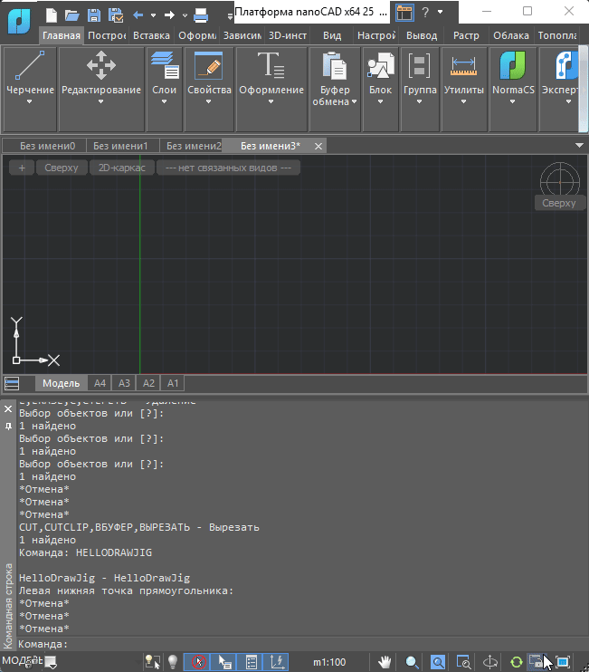
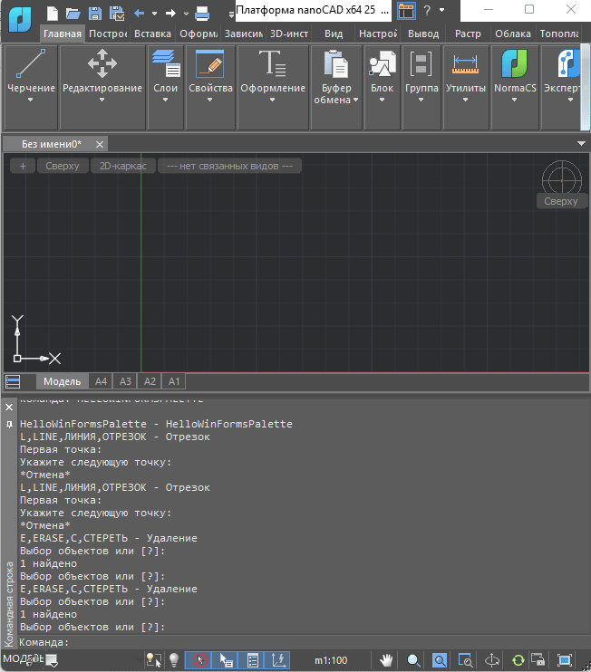

Поскольку я(Леоненко Роман Александрович) являюсь студентом первого курса. Мне и моим сокурсникам по проекту было поручено изучать API NanoCAD (на платформе .NET).
Обучение происходит по материалам курса moodletest nanodev (курс .NET API от партнёра АО НаноСофт).
За всё время деятельности на проекте "Разработка инженерного программного обеспечения" я изучил следующие модули курса:
| Номер модуля | Краткая информация о модуле |
| Модуль 1 | Введение в .NET API. Ввод данных, ключевые слова. Транзакции, создание объектов. Выбор, наборы выбора, приведение типов. |
| Модуль 2 | Сложные составные объекты. Блоки, полилинии, размеры. |
| Модуль 3 | Геометрическая библиотека, работа с кривыми. Координатные системы, команды в ПСК. |
| Модуль 4 | Основные свойства примитивов. Интерактивное создание и редактирование примитивов: Jig. |
| Модуль 5 | Реакторы. События базы данных, редактора, системы. Контроль объектов, находящихся под курсором. |
| Модуль 6 | Создание окон на WinForms/WPF. Палитры. Программный интерфейс подсистемы печати. |
| Модуль 7 | Таблицы .dwg. Неграфические данные. XData, XRecord, словари расширения. Переопределение характеристик объектов чертежа: Overrule. |
| Модуль 8 | MultiCAD.NET. Элементы оформления и таблицы. |
Модуль 1. Реализация команды Hello.

[CommandMethod("Hello")]
public void Hello()
{
Editor ed = Application.DocumentManager.MdiActiveDocument.Editor;
// TODO 1.1.1: Вывести сообщение "Добро пожаловать в управляемый код nanoCAD!"
ed.WriteMessage("Добро пожаловать в управляемый код nanoCAD!");
// Вывод текста (сообщения) в командную строку
// Запрос строки у пользователя
// -----------------------------------
// TODO 1.1.2: Запросить строку при помощи GetString()
PromptStringOptions opts = new PromptStringOptions("Введите строку");
opts.AllowSpaces = true;
PromptResult pr = ed.GetString(opts);
if (PromptStatus.OK == pr.Status)
{
ed.WriteMessage("Вы ввели: " + pr.StringResult);
}
else
{
ed.WriteMessage("Ошибка при вводе.");
}
// ---------------------------------
// Запрос целого числа у пользователя
// ----------------------------------------
// TODO 1.1.3: Добавить запрос целого числа
// с ключевыми словами "Первое", "Второе", "Еще_одно"
// и обработать статус PromptStatus.Keyword.
PromptIntegerOptions iopts = new PromptIntegerOptions("Введите целое число");
iopts.Keywords.Add("Первое");
iopts.Keywords.Add("Второе");
iopts.Keywords.Add("Еще одно");
iopts.AppendKeywordsToMessage = true;
PromptIntegerResult ipr = ed.GetInteger(iopts);
if (PromptStatus.OK == ipr.Status)
{
ed.WriteMessage("Вы ввели: " + ipr.Value);
}
if (PromptStatus.Keyword == ipr.Status)
{
if (ipr.StringResult == "Первое")
ed.WriteMessage("Вы ввели ключевое слово: Первое");
else if (ipr.StringResult == "Второе")
ed.WriteMessage("Вы ввели ключевое слово: Второе");
else
ed.WriteMessage("Вы ввели ключевое слово: Ещё одно");
}
else
{
ed.WriteMessage("Отмена");
}
// ------------------------------
}
Модуль 3. Реализация команды HelloIntersect(точка пересечения двух векторов).

[CommandMethod("HelloIntersect")]
public void HelloIntersect()
{
Document doc = Application.DocumentManager.MdiActiveDocument;
Editor ed = doc.Editor;
Database db = doc.Database;
ObjectId CurrentSpaceId = db.CurrentSpaceId;
// Использовать, если нужно добавлять объекты в текущий лист, вместо ModelSpace
ObjectId id1, id2;
PromptEntityOptions opts;
PromptEntityResult pr;
opts = new PromptEntityOptions("Выберите первый примитив");
pr = ed.GetEntity(opts);
id1 = pr.ObjectId;
opts.Message = "Выберите второй примитив";
pr = ed.GetEntity(opts);
id2 = pr.ObjectId;
using (Transaction trans = db.TransactionManager.StartTransaction())
{
Entity ent1 = trans.GetObject(id1, OpenMode.ForRead) as Entity;
Entity ent2 = trans.GetObject(id2, OpenMode.ForRead) as Entity;
if (ent1 != null && ent2 != null)
{
ed.WriteMessage("Примитив 1: {0}\n", ent1.GetRXClass().Name);
ed.WriteMessage("Примитив 2: {0}\n", ent2.GetRXClass().Name);
Point3dCollection intersectionPoints = new Point3dCollection();
// TODO 3.2.1: Вычислить точки пересечения примитивов ent1 и ent2,
// используя метод Entity.IntersectWith()
ent1.IntersectWith(ent2, Intersect.OnBothOperands, intersectionPoints, IntPtr.Zero, IntPtr.Zero);
ed.WriteMessage("Число пересечений: {0}\n", intersectionPoints.Count);
foreach (Point3d p in intersectionPoints)
{
ed.WriteMessage("Пересечение: ({0}, {1}, {2})\n", p.X, p.Y, p.Z);
}
}
else
{
ed.WriteMessage("Не удалось открыть примитивы\n");
}
trans.Commit();
}
}
Модуль 4. Реализация команды HelloDrawJig(предварительная отрисовка прямоугольника).

[CommandMethod("HelloDrawJig")]
public void HelloRECTDIMDrawJig()
{
// Ссылки на активный dwg-документ, его редактор и базу данных
Document doc = Application.DocumentManager.MdiActiveDocument;
Editor ed = doc.Editor;
Database db = doc.Database;
ObjectId CurrentSpaceId = db.CurrentSpaceId; // Использовать, если
// нужно добавлять объекты в текущий лист, вместо ModelSpace
// Переменная для базовой точки прямоугольника
Point3d p1;
// Запрос базовой точки прямоугольника
PromptPointOptions opts = new PromptPointOptions("Левая нижняя точка прямоугольника: ");
PromptPointResult pr = ed.GetPoint(opts);
if (PromptStatus.OK != pr.Status)
return;
// Сохранение координат базовой точки в переменную
p1 = pr.Value;
// Начало транзакции с базой данных чертежа
using (Transaction trans = db.TransactionManager.StartTransaction())
{
// Открываем таблицу блоков чертежа
BlockTable blockTable =
trans.GetObject(db.BlockTableId,
OpenMode.ForRead) as BlockTable;
// Открываем пространство модели из таблицы блоков
BlockTableRecord modelSpace =
trans.GetObject(blockTable[BlockTableRecord.ModelSpace],
OpenMode.ForWrite) as BlockTableRecord;
// Создаем экземпляр класса, который отрисовываем прямоугольник с
// размерами по двум сторонам с применением технологии Jig
RectDrawJig rectJig = new RectDrawJig(p1);
// Запускаем отрисовку произвольной графики с технологией Jig
pr = (PromptPointResult)ed.Drag(rectJig);
if (pr.Status == PromptStatus.OK)
{
trans.Commit();
}
}
}
Модуль 5. Реализация команды HelloEditorReactorAdd(рисуем окружность в текущей позиции курсора).

void HelloEditorReactor_PointMonitor(object sender, PointMonitorEventArgs e){
Point3d curPoint = e.Context.RawPoint;
double Radius = 100.0;
e.Context.DrawContext.Geometry.Circle(curPoint, Radius, Vector3d.XAxis);
}
[CommandMethod("HelloEditorReactorAdd")]
public void HelloEditorReactorAdd()
{
Document doc = Application.DocumentManager.MdiActiveDocument;
Editor ed = doc.Editor;
Database db = doc.Database;
ObjectId CurrentSpaceId = db.CurrentSpaceId;
// Использовать, если нужно добавлять объекты в текущий лист, вместо ModelSpace
// TODO 5.5.1: Подписаться на события Editor
// EnteringQuiescentState, LeavingQuiescentState, PointMonitor
ed.EnteringQuiescentState += HelloEditorReactor_EnteringQuiescentState;
ed.LeavingQuiescentState += HelloEditorReactor_LeavingQuiescentState;
ed.PointMonitor += HelloEditorReactor_PointMonitor;
}
Модуль 6. Оконный пользовательский интерфейс. Команда: HELLOWINFORMSPALETTE

// Файл WinForms.cs. Отрисовываем окно
[CommandMethod("HelloWinFormsPalette")]
public void HelloWinFormsPalette()
{
if (paletteSet == null)
{
paletteSet = new Platform.Windows.PaletteSet("HelloDotNET PaletteSet",
new Guid("6AA64CDC-7CBA-49C5-8A14-0B8775BAC5BC"));
paletteSet.Size = new System.Drawing.Size(300, 300);
paletteSet.MinimumSize = new System.Drawing.Size(300, 300);
}
else
{
paletteSet.Visible = true;
}
if (paletteWinForms == null)
{
PaletteWinFormsChild paletteWinForms = new PaletteWinFormsChild();
paletteSet.Add("WinFormsPalette", paletteWinForms);
paletteSet.Visible = true;
}
}